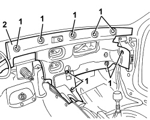

7095E20 SOUNDPROOFING PANEL ON PASSENGER COMPARTMENT FRONT BULKHEAD - R.R WITH HEATER OR AIR CONDITIONING UNIT REMOVED
- Path
- Procedures > 70 FITTINGS > 7095 BODYWORK MISCELLANEOUS > 7095E VARIOUS BODY INSULATION ELEMENTS > 7095E20 SOUNDPROOFING PANEL ON PASSENGER COMPARTMENT FRONT BULKHEAD - R.R WITH HEATER OR AIR CONDITIONING UNIT REMOVED
- Kind
- repair procedure (removal / refitting; the operation number is the code)
- Applies to
- all engines; all production periods
- Interactive page
- https://sloeber94.github.io/elrnDB-aBrrSpdr/en/#/946002705
Applies to: all engines; all production periods
 Removing
Removing
 Refitting
Refitting1. Remove the plastic ring nuts securing the sound-proofing panel.
2. Remove the soundproof panel.

Applies to: all engines; all production periods
Refitting
Removing- Position the soundproof panel in its seat.
- Tighten the plastic ring nuts.